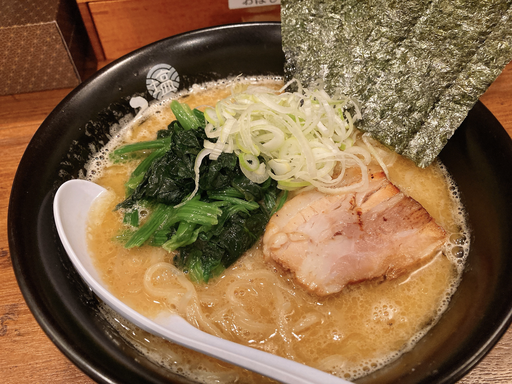

三日坊主も二日目はまだやる気がある
大学の講義も二回目までは真面目に聞くのと同じように、日記も二日目はまだやる気に満ち溢れているってわけ。事実、今は朝の8時台なのに何か書き散らしておくかあなんて言って日記を更新している。脳内を常に活字っぽい文字列が駆け巡っているタイプの人間に制限無しで長文を垂れ流す場を与えるとこうなる。よくない。ツイ廃には140字で十分だろう。
当然のごとくまだ夏休みじゃないわけだが、折角だし礼儀として今日もラジオ体操をしておいた。背中ばっきばきでド鬱。老化なんて騒ぎじゃないだろこれ。あと、第二はやたら飛び跳ねるせいで自宅ですると五月蝿くてちょっと申し訳なくなる。明日は池の会にでも行ってみようかしら。
昼飯調達も兼ねて、池歩きつつセブンに。久しぶりにセブンコーヒーを買うなどした。セミがガンガン鳴いてるけどまだ涼しい時間帯、何かに勝った気分になれてQOLが高い。そして散歩の後のアイスコーヒーの美味さ半端ない。Lサイズでも魔剤より安いのでコスパ神。あ、「コーヒーのオヒィの部分」RTし忘れた。
コーヒーのオヒィの部分
— ( ´ •᎑• ` ) (@xecual) May 25, 2020
FF外なんだよなあ。
ちなみに昨日有識者さんの日記にここが紹介されていた。どうも強力な協力者ことプリティーチャーミングゆで卵っちです1。
毎年恒例の夏休みの日記が始まった(一年振り二度目)。
昨年は8月が力尽きる前に力尽き、月如きよりも意思が弱いことが証明された。
が、今年は強力な協力者がいる。http://kanagu.tech (@Kanagu_Requiem) ではなく https://suu-u.github.io (プリティーチャーミングゆで卵っち)だ。
前者のような500日近くもブログを書かないカスとは違い、後者は多分書き続けてくれるでしょう。
多分他人が書いてたら私も書くはず。
― Mary 2021年夏休みの日記帳/夏休みの目標
他人が書いてたら私も書くはず、ほんまか？？？高笑いできる日を楽しみにしているよ。
急遽卓上の作業スペースの拡張が必要になって、溜めに溜めていた空き缶空きペットボトルを処理するなどした2。机やら床やらに転がりまくってるペットボトル全部集めるとそこら辺に売ってるPCケースと大体同じくらいの体積になる。これを毎日コツコツ処分していればお家に自作PC置くスペースを確保できるわけですね。いやーちょっと難しいかなーえへへ。
机広くて今めちゃくちゃ感動してる。
めちゃくちゃ久しぶりにおおおで夕飯を食った。ひるがおの学生限定ラーメンが美味いと聞いて。

かなりありよりのあり。夏休みは平日夜が基本外食になる予定なんだけど、週2くらいでいけるやつかもしれない。スープは家系っぽいがっつりなのに麺が細めちゅるちゅるタイプなギャップが面白い。やっぱ最初にラーメンにほうれん草乗っけたやつ天才なんだよなってずっと思ってる。ラーメン奢りたいから名乗ってほしい。
これからしばらくgithubに飯の写真あげ続ける人になるのおもしろいので継続がんばります。